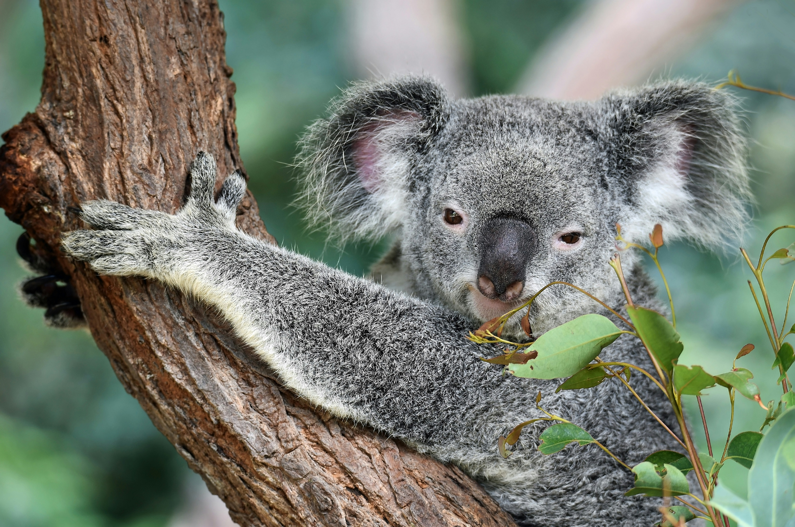

Australian Tourist Guide
Wildlife
First things first, the critters. You've heard about the spiders the size of dinner plates and the snakes that can swallow a small child whole? Well, they're not just rumours. They're the reality of everyday life. But fear not, because Aussies have mastered the art of coexisting with these monsters. Now, the element that often drives tourists away is the threat of venomous, poisonous creatures. Don't be alarmed, though there are many about, there are plenty of ways to be prepared for encounters, remember, Aussies live with these in their back gardens every day! The following is a helpful guide on what you need to know in the chance you come across one of Australia’s staple creatures.
Redback Spider
The Redback spider, (Latrodecus hasselti,) is famed to be an Australian horror. With a deadly bite, the gal gets a pretty bad wrap! Though a daunting thought, the creature's bite has a very effective antidote available. Only the females bite is dangerous, male redbacks much less venomous and far smaller, and in no way dangerous to humans.
Contrary to popular belief, the spider doesn’t bite easily. You're unlikely to be bitten unless a body part, such as a hand, is put directly in their web. Though, do be aware of the spider's funnel-like tangled webs. Redbacks often do have tangled webs, but not funnels. This is called a trap line, the web acting as a trap that alerts them if an insect is stuck! Leaves and debris often stick to them, so have a keen eye. Just remember to check your shoes for spiders before chuck ‘em on, and always shake them out beforehand. It could save your life, or at least spare you a nasty surprise.
Koala
Now, the koalas, while they are charming, fluffy, tree-hugging wonders, they’ve also got an unmatched flair for relaxation. Koalas spend roughly 20 hours a day dreaming in eucalyptus trees. And a less so fun-fact: despite their adorable appearance, koalas are quite the party animals, (get it) when it comes to chlamydia. These guys are famous for having a high rate of this infection, a constant "I need a sick day" excuse. So, while you're snapping selfies with these iconic little guys, just remember they’re not as fluffy on the inside as they are on the outside.
Wombat
Onto my personal favourite, the wombat! These marvellous marsupials are short-legged, interesting little guys.
Wombats have their own unique armour! Their bottoms are tough, they've evolved to have a hard cartilage that’s like a shield. When predators are preying, wombats dive into their burrows and present their behinds as a barrier. Talk about a bum deal for a hunter.
Wombat droppings are not only adorable but quite interesting. Their poop is cube-shaped, you read that right! This shape makes their droppings stay put and is how they mark their territory. What a landmark. Wombats are brilliant architects! Some of their burrows can stretch up to 30 meters (98 feet) in length. These dens are built for perfectly escaping the blistering Australian heat.
Despite their sloth-like swagger, wombats can actually get to speeds of up to 40 km/h (25 mph) over short distances. So, if you see one booking it across a field, you might want to give it a little room, these guys are little athletes! The next Herb Elliot.
Wombats are nappers, spending up to 18 hours a day snoozing in their burrows. Wish I were you guys. This means that if you spot a wombat during the day, it’s probably just rolling out of bed and getting ready for the day. Ultimate experts in taking it easy!
Kangaroos
Now, onto the kangas! These bright boxers have quite a reputation!! From the jokes across the world that Aussie kids 'take kangaroos to school', and the road-hopping they enjoy, these guys are also major fighters! Kangaroos are mighty boxers, with muscles and height of nearly up to 2 metres! (6.6 feet). Though, some beg to differ.
Across social media platforms, American men have decided that they could 'take on' a kangaroo in a boxing match! Not too sure about that one, mate! A kangaroo, while it maybe looks cuddly, has the same force of bite as a brown bear, a crazy 975 PSI (6 TIMES a human's bite force!) and a foot-boxing force of 8,8000 lb-ft/s (8 TIMES what a human can manage!!!)
So stay alert!!! While kangaroos are the staple of Aussies beautiful country, they can pick a fight, and win!!!!!!!!!! Australia's outback bloody well defends itself!
 Photo by David Clode on Unsplash